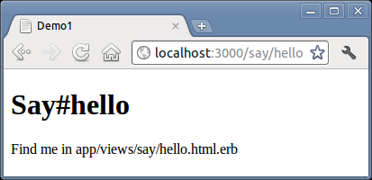
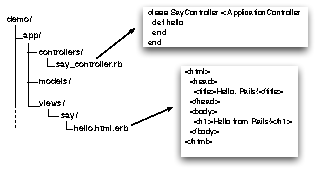

We can’t help it—we just have to write a “Hello, World!” program to try a new system. Let’s start by creating a simple application that sends our cheery greeting to a browser. After we get that working, we will embellish it with the current time and links.
As we’ll explore further in Chapter 3, The Architecture of Rails Applications, Rails is a Model-View-Controller framework. Rails accepts incoming requests from a browser, decodes the request to find a controller, and calls an action method in that controller. The controller then invokes a particular view to display the results to the user. The good news is that Rails takes care of most of the internal plumbing that links all these actions. To write our simple “Hello, World!” application, we need code for a controller and a view, and we need a route to connect the two. We don’t need code for a model, because we’re not dealing with any data. Let’s start with the controller.
In the same way that we used the rails command to create a new Rails application, we can also use a generator script to create a new controller for our project. This command is called rails generate. So, to create a controller called say, we make sure we’re in the demo directory and run the command, passing in the name of the controller we want to create and the names of the actions we intend for this controller to support:
demo> rails generate controller Say hello goodbye |
|
create app/controllers/say_controller.rb |
|
route get "say/goodbye" |
|
route get "say/hello" |
|
invoke erb |
|
create app/views/say |
|
create app/views/say/hello.html.erb |
|
create app/views/say/goodbye.html.erb |
|
invoke test_unit |
|
create test/functional/say_controller_test.rb |
|
invoke helper |
|
create app/helpers/say_helper.rb |
|
invoke test_unit |
|
create test/unit/helpers/say_helper_test.rb |
|
invoke assets |
|
invoke coffee |
|
create app/assets/javascripts/say.js.coffee |
|
invoke scss |
|
create app/assets/stylesheets/say.css.scss |
The rails generate command logs the files and directories it examines, noting when it adds new Ruby scripts or directories to your application. For now, we’re interested in one of these scripts and (in a minute) the html.erb files.
The first source file we’ll be looking at is the controller. You’ll find it in the file app/controllers/say_controller.rb. Let’s take a look at it:
| rails31/work/demo1/app/controllers/say_controller.rb | |
class SayController < ApplicationController |
|
def hello |
|
end |
|
def goodbye |
|
end |
|
end |
|
Pretty minimal, eh? SayController is a class that inherits from ApplicationController, so it automatically gets all the default controller behavior. What does this code have to do? For now, it does nothing—we simply have an empty action method named hello. To understand why this method is named this way, we need to look at the way Rails handles requests.
Like any other web application, a Rails application appears to its users to be associated with a URL. When you point your browser at that URL, you are talking to the application code, which generates a response to you.
Let’s try it now. Navigate to the URL http://localhost:3000/say/hello in a browser window. (Note that in the development environment we don’t have any application string at the front of the path—we route directly to the controller.) You’ll see something that looks like Figure 2, Template ready for us to fill in.
|  |
|
Figure 2. Template ready for us to fill in |
At this point, we can see not only that have we connected the URL to our controller but also that Rails is pointing the way to our next step, namely, to tell Rails what to display. That’s where views come in. Remember when we ran the script to create the new controller? That command added six files and a new directory to our application. That directory contains the template files for the controller’s views. In our case, we created a controller named say, so the views will be in the directory app/views/say.
By default, Rails looks for templates in a file with the same name as the action it’s handling. In our case, that means we need to replace a file called hello.html.erb in the directory app/views/say. (Why html.erb? We’ll explain in a minute.) For now, let’s just put some basic HTML in there:
| rails31/work/demo1/app/views/say/hello.html.erb | |
<h1>Hello from Rails!</h1> |
|
Save the file hello.html.erb, and refresh your browser window. You should see it display our friendly greeting:
In total, we’ve looked at two files in our Rails application tree. We looked at the controller, and we modified a template to display a page in the browser. These files live in standard locations in the Rails hierarchy: controllers go into app/controllers, and views go into subdirectories of app/views. See Figure 3, Standard locations for controllers and views.
|  |
|
Figure 3. Standard locations for controllers and views |
So far, our Rails application is pretty boring—it just displays a static page. To make it more dynamic, let’s have it show the current time each time it displays the page.
To do this, we need to make a change to the template file in the view—it now needs to include the time as a string. That raises two questions. First, how do we add dynamic content to a template? Second, where do we get the time from?
There are many ways of creating dynamic templates in Rails. The most common way, which we’ll use here, is to embed Ruby code in the template itself. That’s why we named our template file hello.html.erb; the html.erb suffix tells Rails to expand the content in the file using a system called ERB.
ERB is a filter that is installed as part of the Rails installation that takes an erb file and outputs a transformed version. The output file is often HTML in Rails, but it can be anything. Normal content is passed through without being changed. However, content between <%= and %> is interpreted as Ruby code and executed. The result of that execution is converted into a string, and that value is substituted in the file in place of the <%=…%> sequence. For example, change hello.html.erb to display the current time:
| rails31/work/demo2/app/views/say/hello.html.erb | |
<h1>Hello from Rails!</h1> |
|
| * | <p> |
| * | It is now <%= Time.now %> |
| * | </p> |
When we refresh our browser window, we see the time displayed using Ruby’s standard format:[14]
Notice that if you hit Refresh in your browser, the time updates each time the page is displayed. It looks as if we’re really generating dynamic content.
Our original problem was to display the time to users of our application. We now know how to make our application display dynamic data. The second issue we have to address is working out where to get the time from.
We’ve shown that the approach of embedding a call to Ruby’s Time.now method in our hello.html.erb template works. Each time we access this page, the user will see the current time substituted into the body of the response. And for our trivial application, that might be good enough. In general, though, we probably want to do something slightly different. We’ll move the determination of the time to be displayed into the controller and leave the view with the simple job of displaying it. We’ll change our action method in the controller to set the time value into an instance variable called @time:
| rails31/work/demo3/app/controllers/say_controller.rb | |
class SayController < ApplicationController |
|
def hello |
|
| * | @time = Time.now |
end |
|
def goodbye |
|
end |
|
end |
|
In the html.erb template, we’ll use this instance variable to substitute the time into the output:
| rails31/work/demo3/app/views/say/hello.html.erb | |
<h1>Hello from Rails!</h1> |
|
<p> |
|
| * | It is now <%= @time %> |
</p> |
|
When we refresh our browser window, we will again see the current time, showing that the communication between the controller and the view was successful.
Why did we go to the extra trouble of setting the time to be displayed in the controller and then using it in the view? Good question. In this application, it doesn’t make much difference, but by putting the logic in the controller instead, we buy ourselves some benefits. For example, we may want to extend our application in the future to support users in many countries. In that case, we’d want to localize the display of the time, choosing a time appropriate to their time zone. That would be a fair amount of application-level code, and it would probably not be appropriate to embed it at the view level. By setting the time to display in the controller, we make our application more flexible—we can change the time zone in the controller without having to update any view that uses that time object. The time is data, and it should be supplied to the view by the controller. We’ll see a lot more of this when we introduce models into the equation.
Let’s briefly review how our current application works:
The user navigates to our application. In our case, we do that using a local URL such as http://localhost:3000/say/hello.
Rails then matches the route pattern, which it previously split into two parts and analyzed.
The say part is taken to be the name of a controller, so Rails creates a new instance of the Ruby class SayController (which it finds in app/controllers/ say_controller.rb).
The next part of the pattern, hello, identifies an action. Rails invokes a method of that name in the controller. This action method creates a new Time object holding the current time and tucks it away in the @time instance variable.
Rails looks for a template to display the result. It searches the directory app/views for a subdirectory with the same name as the controller (say) and in that subdirectory for a file named after the action (hello.html.erb).
Rails processes this file through the ERB templating system, executing any embedded Ruby and substituting in values set up by the controller.
The result is returned to the browser, and Rails finishes processing this request.
This isn’t the whole story—Rails gives you lots of opportunities to override this basic workflow (and we’ll be taking advantage of them shortly). As it stands, our story illustrates convention over configuration, one of the fundamental parts of the philosophy of Rails. By providing convenient defaults and by applying certain conventions on how a URL is constructed or in what file a controller definition is placed and what class name and method names are used, Rails applications are typically written using little or no external configuration—things just knit themselves together in a natural way.